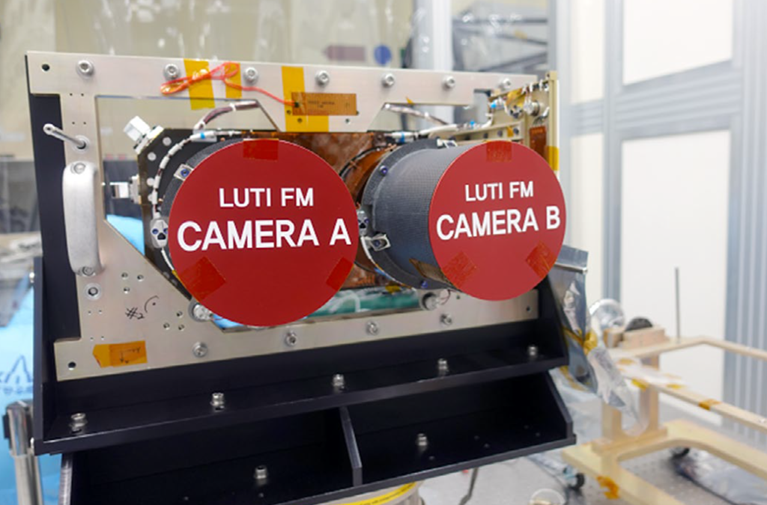

고해상도 카메라(LUTI)
다누리호에 탑재된 고해상도 카메라[LUTI(루티), LUnar Terrain
Imager]는 한국항공우주연구원에서 개발하였으며, 향후 달 탐사 임무를
위한 착륙 가능성이 있는 지점과 기타 특정 목표 지점의 이미지를
촬영합니다. LUTI는 100km 고도에서 픽셀당 2.5m의 높은 공간 해상도를
가지며, 450-850nm 파장대역으로 달의 지질학 및 지형 데이터를
수집합니다. 수집된 자료는 한국의 2단계 달탐사(2030년대)를 위한 착륙
후보지를 조사하는데 사용됩니다.
루티는 더 넓은 달 표면
관측 영역 확보를 위해 두개의 카메라가 서로 반대 방향으로 약 2.7도
기울여 설치되어 있습니다. 나란히 장착되어 설치된 카메라로 달 표면의
너비 10km 영역을 관측하며, 두 카메라의 영상이 약간 겹치도록
설계되었습니다. 두 영상 간의 잔여 이득차이는 지상 영상 처리를 통해
보정됩니다.

루티, 고해상도 카메라 (항우연 제공)